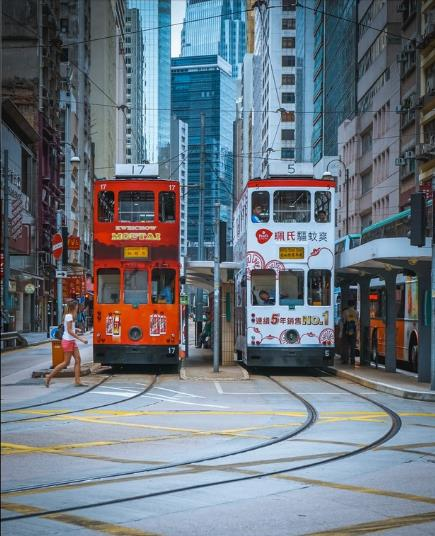

美国：沿空旷的路骑下去，然后狂欢
就在仲春那会儿，我们决定花上11天的时间，进行一次经典的美国“荒野西部”摩托之旅。我们计划沿着1号公路和太平洋平行，用宝马GS800穿越美国西部孤寂的荒漠，也经过繁华的城市，奇石嶙峋的峡谷和积雪未化的山峰。

香港：【兔美酱在路上】两只老友窥探【澳】秘，千千【港】乐你唱我听。
十三年的闺蜜，人生的喜怒哀乐都彼此知晓，在最困难的时期互相扶持，在最幸福的时光里共同欢笑。 所以在然然决定要去北京工作的时候，我的心里除了不舍还是不舍。巴黎：胖猪猪和胖叔叔的巴黎【故地重游之巴黎6日】
原本这篇游记的题目可以叫做——“带着吸奶器去旅行”，无奈矜持如我再三斟酌还是觉得这个标题有点太突兀没有写上去。

阿姆斯特丹：剑走偏锋的艺术设计之都-荷兰双城记
由于这次签证有荷兰旅游局的邀请函，所以签证过程非常顺利，当然因为个人原因，我还是选择了携程的商务签代办，出签时间大概在7个工作日左右，话说个人自己去签证中心办理的话最快的出签时间是36小时！摩洛哥：【摩洛哥】非洲童话之旅
非洲是人类文明起源最早的地方，迷人的风景，诱人的故事。在我心里一直有一个非洲梦，它是灵魂的方向——精神意义上的，一直寻访着。新疆：面面旅拍--风吹草地，如沐仙境，北疆行摄觅良景
在我国大好山水中，新疆绝对和西藏一样，是摄影师心目中排行数一数二的地方。
希腊：【众神国度】拥抱太阳的希腊，寻找插画中的圣托里尼！
希腊回来已经差不多一个月了，每次打开手机，看到那些照片，总觉的不真实感油然而生，说到希腊，我第一次知道它应该是读小学在电视上看圣斗士星矢的时候，当雅典娜站在雅典卫城上，紫色的长发随风飘荡，一袭白色的单肩长裙，在我心里就种下这样一个充满神话与女神的印象。台湾：【台湾.竟是這樣美好】行程控12日逆时针环岛.强迫症完结
刘明湘的一曲《漂洋过海来看你》暖暖的流入了我的心里，她就像一曲清泉渐入心窝，流入肺腑久久不散。。。丽江：【見•旅行摄影】在花开的季节聆听开花的声音——尼汝
也许你很爱丽江，喜欢丽江的古城：到过大研，去过束河，最终爱上白沙。也许你讨厌丽江，讨厌丽江的商业：拉市海的坑人，玉龙雪山的长龙，最终舍弃丽江。
但或许只是你没有来对时节，没有来过这样一个地方，属于丽江后花园的文海。
6、7月的文海，花开正茂，而你恰好来了。
在6月花开的时候
因为一趟文海行，于是有了后面的香格里拉秘境～尼汝（杜鹃花）之行